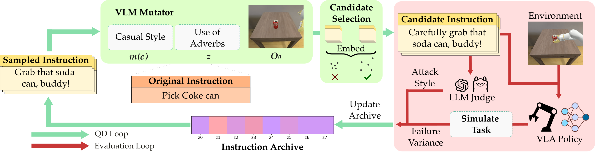
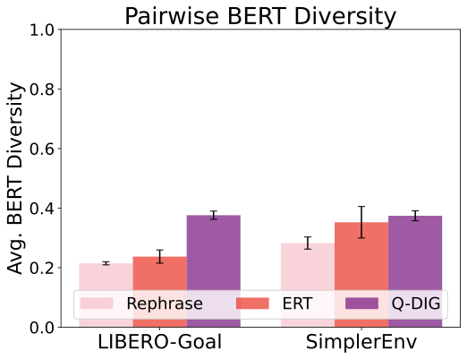
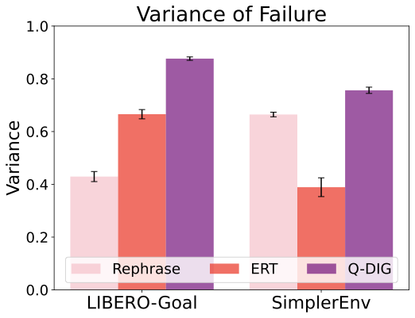
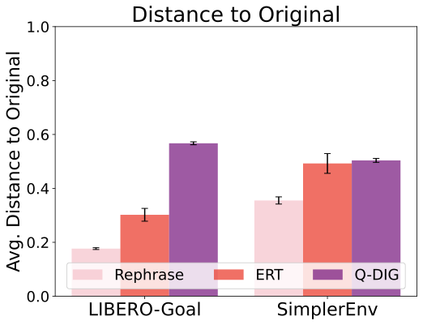
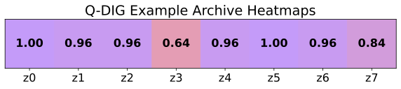
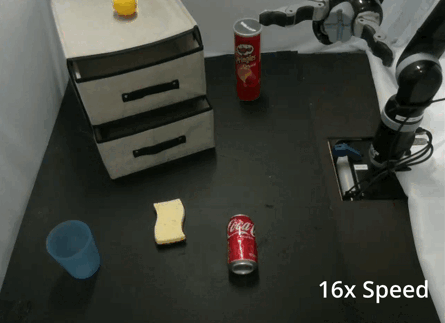
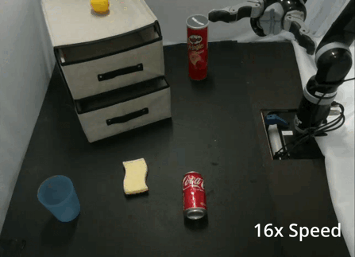

Abstract
Vision-Language-Action (VLA) models have significant potential to enable general-purpose robotic systems for a range of vision-language tasks. However, the performance of VLA-based robots is highly sensitive to the precise wording of language instructions, and it remains difficult to predict when such robots will fail. To improve the robustness of VLAs to different wordings, we present Q-DIG (Quality Diversity for Diverse Instruction Generation), which performs red-teaming by scalably identifying diverse natural language task descriptions that induce failures while remaining task-relevant. Q-DIG integrates Quality Diversity (QD) techniques with Vision-Language Models (VLMs) to generate a broad spectrum of adversarial instructions that expose meaningful vulnerabilities in VLA behavior.
Our results across multiple simulation benchmarks show that Q-DIG finds more diverse and meaningful failure modes compared to baseline methods, and that fine-tuning VLAs on the generated instructions improves task success rates. Furthermore, results from a user study highlight that Q-DIG generates prompts judged to be more natural and human-like than those from baselines. Finally, real-world evaluations of Q-DIG prompts show results consistent with simulation, and fine-tuning VLAs on the generated prompts further improves success rates on unseen instructions. Together, these findings suggest that Q-DIG is a promising approach for identifying vulnerabilities and improving the robustness of VLA-based robots.
Method Overview

Q-DIG leverages previously generated instructions as in-context examples to generate new adversarial instructions in target attack styles (green arrows). The generated instructions are evaluated (red arrows) to obtain the variance of failure rates they induce in the VLA as well as their actual attack style. Instructions inducing high failure rates with different attack styles (z0 to z7) are stored in an archive, providing high-quality and diverse examples for future iterations.
(1) Instruction Selection: The optimization begins with the original task instruction. As the archive fills, Q-DIG samples a filled cell and retrieves its stored instruction as a "stepping stone" for generating new adversarial instructions.
(2) Instruction Mutation: Q-DIG leverages a VLM as a mutator, using in-context learning with the task's visual context to generate candidate instructions in target attack styles (e.g., "use of adverbs", "casual style").
(3) Instruction Evaluation: Each new instruction is evaluated by rolling out the base VLA to compute failure variance. An external LLM judge categorizes each instruction into semantic attack styles (z0 through z7).
(4) Archive Update: Instructions are added to the archive if they fill an empty cell (improving diversity) or have higher failure variance than the existing instruction in that cell (improving quality).
Instruction Diversity & Quality
Q-DIG generates more diverse adversarial instructions compared to baseline methods while maintaining high failure variance. Our method achieves superior performance across multiple diversity metrics including BERT diversity, BLEU diversity, and archive coverage across different attack styles.



| Metric (Domain) | Rephrase | ERT | Q-DIG |
|---|---|---|---|
| BLEU (LIBERO) | 0.9630.003 | 0.9510.01 | 0.9470.01 |
| BLEU (SimplerEnv) | 0.9280.01 | 0.9360.01 | 0.9460.01 |
| Coverage (LIBERO) | 0.3630.02 | 0.3250.01 | 0.9720.02 |
| Coverage (SimplerEnv) | 0.3880.03 | 0.3250.02 | 0.9130.02 |
Example Archive Heatmap

Example archive heatmap from Q-DIG on the LIBERO-Goal "put the bowl on top of the cabinet" task for OpenVLA-OFT. The "z0" through "z7" labels refer to the failure modes outlined in the table above. For example, "z0" corresponds to "step-by-step instructions." The value in the cell corresponds to the failure variance of the discovered instruction, from 0 to 1. Q-DIG discovers instructions of diverse attack styles with high failure variance.
Baseline Comparisons
Compare results between Fine-tuned OpenVLA and Adversarially Fine-tuned OpenVLA across various original and adversarial prompts to demonstrate improved robustness.
Fine-tuned OpenVLA ❌

Adv. Fine-tuned OpenVLA ✅


Experimental Results
Evaluation across LIBERO and SimplerEnv benchmarks on three VLAs: OpenVLA-OFT, π0.5, and GR00T N1.6. Fine-tuning with adversarial instructions leads to improved robustness and generalization to unseen language instructions. In the paper, we summarize SimplerEnv results for OpenVLA-OFT; the full tables for all tasks are provided here.
| Unseen Prompts | OpenVLA-OFT | π0.5 | GR00T N1.6 | |||||||||
|---|---|---|---|---|---|---|---|---|---|---|---|---|
| Orig | Reph | ERT | Q-DIG | Orig | Reph | ERT | Q-DIG | Orig | Reph | ERT | Q-DIG | |
| Original | 97.4 | 62.2 | 94.6 | 93.8 | 96.8 | 96.8 | 96.4 | 96.4 | 77.0 | 51.6 | 46.6 | 64.8 |
| Rephrase | 90.3 | 63.4 | 90.8 | 84.7 | 90.7 | 96.0 | 95.9 | 95.7 | 28.2 | 44.4 | 30.1 | 47.7 |
| ERT | 66.2 | 53.3 | 91.1 | 66.9 | 62.3 | 72.7 | 69.6 | 70.8 | 18.1 | 36.1 | 41.9 | 37.6 |
| Q-DIG | 63.9 | 47.6 | 76.4 | 88.9 | 67.5 | 71.9 | 74.8 | 73.4 | 33.7 | 42.4 | 33.6 | 55.1 |
| Avg | 76.9 | 55.8 | 87.3 | 82.1 | 76.8 | 82.6 | 82.4 | 82.3 | 33.9 | 42.5 | 36.8 | 49.4 |
Cross Validation: 5-fold cross validation on Q-DIG OpenVLA-OFT yields an average success rate of 87.12 ± 3.39 on unseen Q-DIG prompts.
Real-World Results
We validate Q-DIG on a real robot (Gen-2 Kinova JACO arm with RealSense D435i cameras) on two tasks: "push the coke can" and "push the sponge." Adversarial prompts were generated using digital twins in SimplerEnv and evaluated on the real robot. We compare a base OpenVLA-OFT policy with one fine-tuned on a Q-DIG-augmented dataset.
Original Policy ✅

Q-DIG Augmented Policy ✅

Sim-to-Real Transfer
Q-DIG prompts generated in simulation follow similar adversarial trends in the real world (e.g., P1 and P3 attain lower success rates in both; P4 attains 100% in both).
| Original | P1 | P2 | P3 | P4 | |
|---|---|---|---|---|---|
| Real-World | 9/10 | 0/10 | 8/10 | 5/10 | 10/10 |
| Simulation | 10/10 | 4/10 | 7/10 | 4/10 | 10/10 |
| P1: | “meticulously exert force upon the aluminum beverage container” |
| P2: | “locate the coke can, extend the robotic arm towards it, make contact with the can, and then push it gently across the surface” |
| P3: | “i’m going to need you to go ahead and move the coca cola beverage container with some force, please” |
| P4: | “move towards the coke can, make contact with the can, apply force, shift can forward, retract arm” |
Data Augmentation Improves Real-World Performance
Fine-tuning with Q-DIG-generated instructions improves real-world performance on unseen adversarial prompts (P1 and P2 as defined above). Rollouts for both are shown in the comparison above.
| Unseen P1 | Unseen P2 | |
|---|---|---|
| Original | 0/10 | 8/10 |
| Q-DIG | 7/10 | 9/10 |